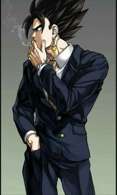
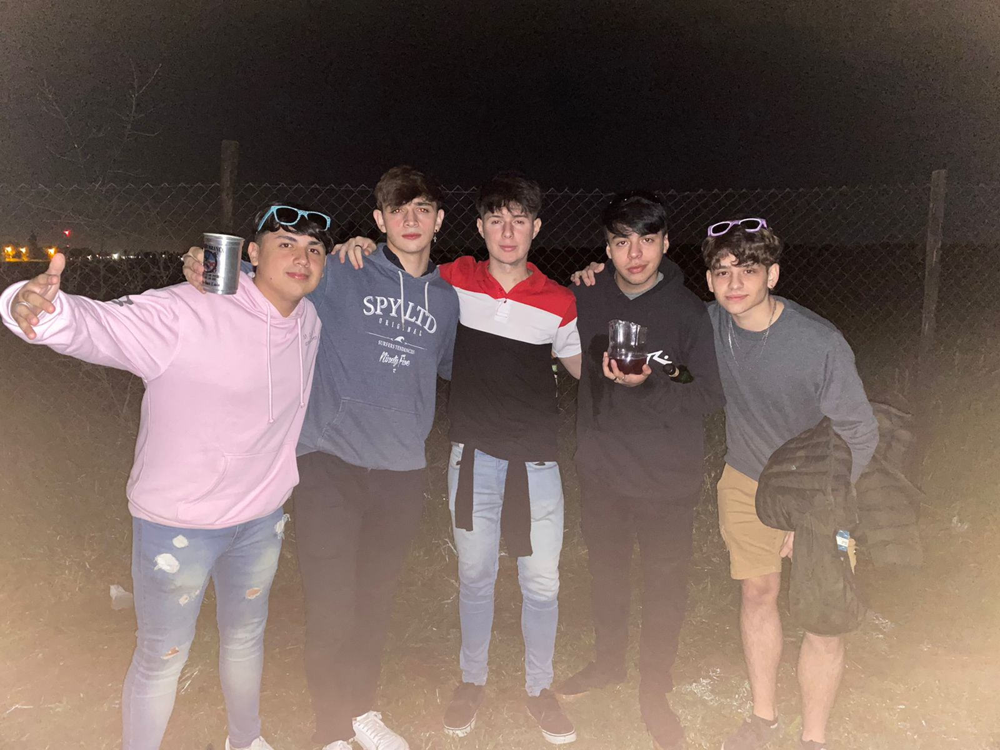

Este es el primer blog de Ramiro Volker, hecho el 21/03/2022.
Espero que todos puedan disfrutar del contenido de la página, integrado por el autor Volker Ramiro y sus más cercanos amigos.
Primero empecemos con una foto del autor del blog.
Como podemos observar detenidamente en la foto, el autor es muy bello y tiene vibras de empresario multimillonario.
Se puede deducir que Ramiro Volker es un tipo muy sociable y querido por la cantidad de amigos de excelencia que tiene.
A continuación una foto de él con su grupo de amigos "Los Vengadores"
Si bien Ramiro es conocido por ser un hombre independiente y fuerte, no deja de lado sus grandes amistades.
A continuación una foto de él con uno de sus mejores amigos, Bruno Cairo.
Podríamos decir que la imágen es una de las 7 maravillas fotografiadas por el ser humano sin lugar a duda alguna.
Bueno chavales espero que les haya gustado mi blog, no me pidan plata cuando sea
programador y gane 10 luca verde al mes hijos de puta saludooos.